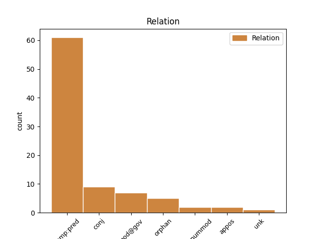
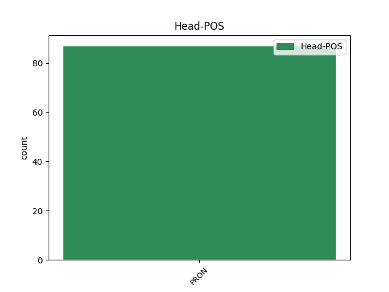
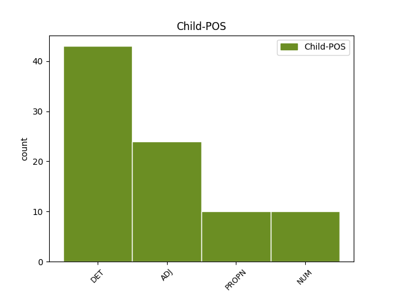

Distribution of features within this leaf



Agreement Rules sorted by frequency.
- When the dependent token is the predicative complements(comp:pred) of the head token, and the head token is PRON and the dependent token is DET.
1 A _ _ _ _ 0 _ _ _
2 ty ty PRON PP-S1--2------- Case=Nom|Number=Sing|Person=2|PronType=Prs 0 _ _ _
3 sám sám DET PLMS1---------- Animacy=Anim|Case=Nom|Gender=Masc|Number=Sing|PronType=Emp 2 comp:pred _ _
4 jsi _ _ _ _ 0 _ _ _
5 mě _ _ _ _ 0 _ _ _
6 držel _ _ _ _ 0 _ _ _
7 v _ _ _ _ 0 _ _ _
8 zajetí _ _ _ _ 0 _ _ _
9 , _ _ _ _ 0 _ _ _
10 ale _ _ _ _ 0 _ _ _
11 nakonec _ _ _ _ 0 _ _ _
12 jsi _ _ _ _ 0 _ _ _
13 přinesl _ _ _ _ 0 _ _ _
14 zprávu _ _ _ _ 0 _ _ _
15 , _ _ _ _ 0 _ _ _
16 která _ _ _ _ 0 _ _ _
17 vedla _ _ _ _ 0 _ _ _
18 k _ _ _ _ 0 _ _ _
19 mému _ _ _ _ 0 _ _ _
20 osvobození _ _ _ _ 0 _ _ _
21 . _ _ _ _ 0 _ _ _
22 " _ _ _ _ 0 _ _ _
1 Nikdo _ _ _ _ 0 _ _ _
2 netušil _ _ _ _ 0 _ _ _
3 , _ _ _ _ 0 _ _ _
4 kdo kdo PRON PKM-1---------- Animacy=Anim|Case=Nom|Gender=Masc|PronType=Int,Rel 0 _ _ _
5 první první ADJ CrMS1---------- Animacy=Anim|Case=Nom|Gender=Masc|Number=Sing|NumType=Ord 4 comp:pred _ _
6 vyslovil _ _ _ _ 0 _ _ _
7 to _ _ _ _ 0 _ _ _
8 ohavné _ _ _ _ 0 _ _ _
9 podezření _ _ _ _ 0 _ _ _
10 , _ _ _ _ 0 _ _ _
11 ale _ _ _ _ 0 _ _ _
12 šuškání _ _ _ _ 0 _ _ _
13 skrývané _ _ _ _ 0 _ _ _
14 do _ _ _ _ 0 _ _ _
15 dlaní _ _ _ _ 0 _ _ _
16 nebylo _ _ _ _ 0 _ _ _
17 možno _ _ _ _ 0 _ _ _
18 přeslechnout _ _ _ _ 0 _ _ _
19 a _ _ _ _ 0 _ _ _
20 významné _ _ _ _ 0 _ _ _
21 pohledy _ _ _ _ 0 _ _ _
22 ostatních _ _ _ _ 0 _ _ _
23 mnichů _ _ _ _ 0 _ _ _
24 , _ _ _ _ 0 _ _ _
25 kdykoli _ _ _ _ 0 _ _ _
26 Naitó _ _ _ _ 0 _ _ _
27 procházel _ _ _ _ 0 _ _ _
28 kolem _ _ _ _ 0 _ _ _
29 , _ _ _ _ 0 _ _ _
30 nešly _ _ _ _ 0 _ _ _
31 přehlédnout _ _ _ _ 0 _ _ _
32 . _ _ _ _ 0 _ _ _
1 " _ _ _ _ 0 _ _ _
2 Jen _ _ _ _ 0 _ _ _
3 já já PRON PP-S1--1------- Case=Nom|Number=Sing|Person=1|PronType=Prs 0 _ _ _
4 , _ _ _ _ 0 _ _ _
5 Simona Simona PROPN NNFS1-----A---- Case=Nom|Gender=Fem|NameType=Giv|Number=Sing|Polarity=Pos 3 conj _ _
6 a _ _ _ _ 0 _ _ _
7 ty _ _ _ _ 0 _ _ _
8 a _ _ _ _ 0 _ _ _
9 máma _ _ _ _ 0 _ _ _
10 . _ _ _ _ 0 _ _ _
1 A _ _ _ _ 0 _ _ _
2 zatímco _ _ _ _ 0 _ _ _
3 se _ _ _ _ 0 _ _ _
4 takhle _ _ _ _ 0 _ _ _
5 přely _ _ _ _ 0 _ _ _
6 , _ _ _ _ 0 _ _ _
7 šel _ _ _ _ 0 _ _ _
8 kolem _ _ _ _ 0 _ _ _
9 rybář _ _ _ _ 0 _ _ _
10 a _ _ _ _ 0 _ _ _
11 polapil _ _ _ _ 0 _ _ _
12 je on PRON PPFP4--3------- Case=Acc|Gender=Fem|Number=Plur|Person=3|PronType=Prs 0 _ _ _
13 obě _ _ _ _ 0 _ _ _
14 dvě dva NUM ClFP4---------- Case=Acc|Gender=Fem|Number=Plur|NumForm=Word|NumType=Card|NumValue=1,2,3 12 comp:pred _ SpaceAfter=No
15 . _ _ _ _ 0 _ _ _
16 " _ _ _ _ 0 _ _ _
1 Chtěla _ _ _ _ 0 _ _ _
2 , _ _ _ _ 0 _ _ _
3 aby _ _ _ _ 0 _ _ _
4 by _ _ _ _ 0 _ _ _
5 byl _ _ _ _ 0 _ _ _
6 cele _ _ _ _ 0 _ _ _
7 její _ _ _ _ 0 _ _ _
8 a _ _ _ _ 0 _ _ _
9 ona _ _ _ _ 0 _ _ _
10 cele _ _ _ _ 0 _ _ _
11 jeho _ _ _ _ 0 _ _ _
12 , _ _ _ _ 0 _ _ _
13 ale _ _ _ _ 0 _ _ _
14 často _ _ _ _ 0 _ _ _
15 se _ _ _ _ 0 _ _ _
16 jí _ _ _ _ 0 _ _ _
17 zdálo _ _ _ _ 0 _ _ _
18 , _ _ _ _ 0 _ _ _
19 že _ _ _ _ 0 _ _ _
20 čím _ _ _ _ 0 _ _ _
21 víc _ _ _ _ 0 _ _ _
22 usiluje _ _ _ _ 0 _ _ _
23 dát _ _ _ _ 0 _ _ _
24 mu _ _ _ _ 0 _ _ _
25 vše _ _ _ _ 0 _ _ _
26 , _ _ _ _ 0 _ _ _
27 tím _ _ _ _ 0 _ _ _
28 víc _ _ _ _ 0 _ _ _
29 mu _ _ _ _ 0 _ _ _
30 cosi cosi PRON PZ--4---------- Case=Acc|PronType=Ind 0 _ _ _
31 upírá _ _ _ _ 0 _ _ _
32 : _ _ _ _ 0 _ _ _
33 právě _ _ _ _ 0 _ _ _
34 to ten DET PDNS4---------- Case=Acc|Gender=Neut|Number=Sing|PronType=Dem 30 appos _ SpaceAfter=No
35 , _ _ _ _ 0 _ _ _
36 co _ _ _ _ 0 _ _ _
37 člověku _ _ _ _ 0 _ _ _
38 dává _ _ _ _ 0 _ _ _
39 láska _ _ _ _ 0 _ _ _
40 nehluboká _ _ _ _ 0 _ _ _
41 a _ _ _ _ 0 _ _ _
42 povrchní _ _ _ _ 0 _ _ _
43 , _ _ _ _ 0 _ _ _
44 co _ _ _ _ 0 _ _ _
45 člověku _ _ _ _ 0 _ _ _
46 dává _ _ _ _ 0 _ _ _
47 flirt _ _ _ _ 0 _ _ _
48 . _ _ _ _ 0 _ _ _
1 Nic nic PRON PW--4---------- Case=Acc|PronType=Neg 0 _ _ _
2 víc víc DET Ca--4---------- Case=Acc|NumType=Card|PronType=Ind 1 det@nummod _ _
3 za _ _ _ _ 0 _ _ _
4 tím _ _ _ _ 0 _ _ _
5 nehledej _ _ _ _ 0 _ _ _
6 . _ _ _ _ 0 _ _ _
7 " _ _ _ _ 0 _ _ _
1 Shaffer _ _ _ _ 0 _ _ _
2 dal _ _ _ _ 0 _ _ _
3 do _ _ _ _ 0 _ _ _
4 banku _ _ _ _ 0 _ _ _
5 svou _ _ _ _ 0 _ _ _
6 hru _ _ _ _ 0 _ _ _
7 a _ _ _ _ 0 _ _ _
8 filmový _ _ _ _ 0 _ _ _
9 scénář _ _ _ _ 0 _ _ _
10 , _ _ _ _ 0 _ _ _
11 já já PRON PP-S1--1------- Case=Nom|Number=Sing|Person=1|PronType=Prs 0 _ _ _
12 dva _ _ _ _ 0 _ _ _
13 roky _ _ _ _ 0 _ _ _
14 života _ _ _ _ 0 _ _ _
15 a _ _ _ _ 0 _ _ _
16 Zaentz Zaentz PROPN NNMS1-----A---- Animacy=Anim|Case=Nom|Gender=Masc|NameType=Sur|Number=Sing|Polarity=Pos 11 orphan _ _
17 veškerý _ _ _ _ 0 _ _ _
18 základní _ _ _ _ 0 _ _ _
19 kapitál _ _ _ _ 0 _ _ _
20 . _ _ _ _ 0 _ _ _
1 Chtěla _ _ _ _ 0 _ _ _
2 , _ _ _ _ 0 _ _ _
3 aby _ _ _ _ 0 _ _ _
4 by _ _ _ _ 0 _ _ _
5 byl _ _ _ _ 0 _ _ _
6 cele _ _ _ _ 0 _ _ _
7 její _ _ _ _ 0 _ _ _
8 a _ _ _ _ 0 _ _ _
9 ona on PRON PPFS1--3------- Case=Nom|Gender=Fem|Number=Sing|Person=3|PronType=Prs 0 _ _ _
10 cele _ _ _ _ 0 _ _ _
11 jeho jeho DET PSFS1MS3------- Case=Nom|Gender=Fem|Gender[psor]=Masc|Number=Sing|Number[psor]=Sing|Person=3|Poss=Yes|PronType=Prs 9 orphan _ SpaceAfter=No
12 , _ _ _ _ 0 _ _ _
13 ale _ _ _ _ 0 _ _ _
14 často _ _ _ _ 0 _ _ _
15 se _ _ _ _ 0 _ _ _
16 jí _ _ _ _ 0 _ _ _
17 zdálo _ _ _ _ 0 _ _ _
18 , _ _ _ _ 0 _ _ _
19 že _ _ _ _ 0 _ _ _
20 čím _ _ _ _ 0 _ _ _
21 víc _ _ _ _ 0 _ _ _
22 usiluje _ _ _ _ 0 _ _ _
23 dát _ _ _ _ 0 _ _ _
24 mu _ _ _ _ 0 _ _ _
25 vše _ _ _ _ 0 _ _ _
26 , _ _ _ _ 0 _ _ _
27 tím _ _ _ _ 0 _ _ _
28 víc _ _ _ _ 0 _ _ _
29 mu _ _ _ _ 0 _ _ _
30 cosi _ _ _ _ 0 _ _ _
31 upírá _ _ _ _ 0 _ _ _
32 : _ _ _ _ 0 _ _ _
33 právě _ _ _ _ 0 _ _ _
34 to _ _ _ _ 0 _ _ _
35 , _ _ _ _ 0 _ _ _
36 co _ _ _ _ 0 _ _ _
37 člověku _ _ _ _ 0 _ _ _
38 dává _ _ _ _ 0 _ _ _
39 láska _ _ _ _ 0 _ _ _
40 nehluboká _ _ _ _ 0 _ _ _
41 a _ _ _ _ 0 _ _ _
42 povrchní _ _ _ _ 0 _ _ _
43 , _ _ _ _ 0 _ _ _
44 co _ _ _ _ 0 _ _ _
45 člověku _ _ _ _ 0 _ _ _
46 dává _ _ _ _ 0 _ _ _
47 flirt _ _ _ _ 0 _ _ _
48 . _ _ _ _ 0 _ _ _
1 On _ _ _ _ 0 _ _ _
2 je _ _ _ _ 0 _ _ _
3 vdovec _ _ _ _ 0 _ _ _
4 , _ _ _ _ 0 _ _ _
5 ona on PRON PPFS1--3------- Case=Nom|Gender=Fem|Number=Sing|Person=3|PronType=Prs 0 _ _ _
6 rozvedená rozvedený ADJ AAFS1----1A---- Case=Nom|Degree=Pos|Gender=Fem|Number=Sing|Polarity=Pos 5 orphan _ SpaceAfter=No
7 , _ _ _ _ 0 _ _ _
8 děti _ _ _ _ 0 _ _ _
9 v _ _ _ _ 0 _ _ _
10 péči _ _ _ _ 0 _ _ _
11 nemají _ _ _ _ 0 _ _ _
12 , _ _ _ _ 0 _ _ _
13 tak _ _ _ _ 0 _ _ _
14 proč _ _ _ _ 0 _ _ _
15 si _ _ _ _ 0 _ _ _
16 neříct _ _ _ _ 0 _ _ _
17 ano _ _ _ _ 0 _ _ _
18 ? _ _ _ _ 0 _ _ _
1 Tento _ _ _ _ 0 _ _ _
2 pohled _ _ _ _ 0 _ _ _
3 se _ _ _ _ 0 _ _ _
4 mu _ _ _ _ 0 _ _ _
5 vryl _ _ _ _ 0 _ _ _
6 do _ _ _ _ 0 _ _ _
7 paměti _ _ _ _ 0 _ _ _
8 a _ _ _ _ 0 _ _ _
9 on _ _ _ _ 0 _ _ _
10 si _ _ _ _ 0 _ _ _
11 byl _ _ _ _ 0 _ _ _
12 jist _ _ _ _ 0 _ _ _
13 , _ _ _ _ 0 _ _ _
14 že _ _ _ _ 0 _ _ _
15 už _ _ _ _ 0 _ _ _
16 ji on PRON PPFS4--3------- Case=Acc|Gender=Fem|Number=Sing|Person=3|PronType=Prs 0 _ _ _
17 ani _ _ _ _ 0 _ _ _
18 žádnou žádný DET PWFS4---------- Case=Acc|Gender=Fem|Number=Sing|PronType=Neg 16 conj _ _
19 z _ _ _ _ 0 _ _ _
20 jejích _ _ _ _ 0 _ _ _
21 přítelkyň _ _ _ _ 0 _ _ _
22 nikdy _ _ _ _ 0 _ _ _
23 nenavštíví _ _ _ _ 0 _ _ _
24 . _ _ _ _ 0 _ _ _
Disagree Examples:
1 Sedělo _ _ _ _ 0 _ _ _
2 nás já PRON PP-P2--1------- Case=Gen|Number=Plur|Person=1|PronType=Prs 0 _ _ _
3 v _ _ _ _ 0 _ _ _
4 restauraci _ _ _ _ 0 _ _ _
5 asi _ _ _ _ 0 _ _ _
6 deset deset NUM Cn-S1---------- Case=Nom|Number=Sing|NumForm=Word|NumType=Card 2 mod@gov _ _
7 a _ _ _ _ 0 _ _ _
8 přípitek _ _ _ _ 0 _ _ _
9 následoval _ _ _ _ 0 _ _ _
10 za _ _ _ _ 0 _ _ _
11 přípitkem _ _ _ _ 0 _ _ _
12 . _ _ _ _ 0 _ _ _
1 Zase _ _ _ _ 0 _ _ _
2 jich on PRON PPFP2--3------- Case=Gen|Gender=Fem|Number=Plur|Person=3|PronType=Prs 0 _ _ _
3 pár pár NUM Cn-S1---------- Case=Nom|Number=Sing|NumForm=Word|NumType=Card 2 mod@gov _ _
4 ubylo _ _ _ _ 0 _ _ _
5 , _ _ _ _ 0 _ _ _
6 zase _ _ _ _ 0 _ _ _
7 se _ _ _ _ 0 _ _ _
8 jich _ _ _ _ 0 _ _ _
9 pár _ _ _ _ 0 _ _ _
10 rozplynulo _ _ _ _ 0 _ _ _
11 , _ _ _ _ 0 _ _ _
12 zatímco _ _ _ _ 0 _ _ _
13 vám _ _ _ _ 0 _ _ _
14 to _ _ _ _ 0 _ _ _
15 vyprávím _ _ _ _ 0 _ _ _
16 . _ _ _ _ 0 _ _ _
1 Zase _ _ _ _ 0 _ _ _
2 jich _ _ _ _ 0 _ _ _
3 pár _ _ _ _ 0 _ _ _
4 ubylo _ _ _ _ 0 _ _ _
5 , _ _ _ _ 0 _ _ _
6 zase _ _ _ _ 0 _ _ _
7 se _ _ _ _ 0 _ _ _
8 jich on PRON PPFP2--3------- Case=Gen|Gender=Fem|Number=Plur|Person=3|PronType=Prs 0 _ _ _
9 pár pár NUM Cn-S1---------- Case=Nom|Number=Sing|NumForm=Word|NumType=Card 8 mod@gov _ _
10 rozplynulo _ _ _ _ 0 _ _ _
11 , _ _ _ _ 0 _ _ _
12 zatímco _ _ _ _ 0 _ _ _
13 vám _ _ _ _ 0 _ _ _
14 to _ _ _ _ 0 _ _ _
15 vyprávím _ _ _ _ 0 _ _ _
16 . _ _ _ _ 0 _ _ _
1 Když _ _ _ _ 0 _ _ _
2 přečte _ _ _ _ 0 _ _ _
3 noviny _ _ _ _ 0 _ _ _
4 , _ _ _ _ 0 _ _ _
5 poví _ _ _ _ 0 _ _ _
6 květině _ _ _ _ 0 _ _ _
7 , _ _ _ _ 0 _ _ _
8 co co PRON PQ--1---------- Animacy=Inan|Case=Nom|PronType=Int,Rel 0 _ _ _
9 je _ _ _ _ 0 _ _ _
10 ve _ _ _ _ 0 _ _ _
11 světě _ _ _ _ 0 _ _ _
12 nového nový ADJ AANS2----1A---- Case=Gen|Degree=Pos|Gender=Neut|Number=Sing|Polarity=Pos 8 comp:pred _ SpaceAfter=No
13 . _ _ _ _ 0 _ _ _
1 Ale _ _ _ _ 0 _ _ _
2 jen _ _ _ _ 0 _ _ _
3 pár pár NUM Cn-S1---------- Case=Nom|Number=Sing|NumForm=Word|NumType=Card 4 mod@gov _ _
4 jich on PRON PPMP2--3------- Animacy=Anim|Case=Gen|Gender=Masc|Number=Plur|Person=3|PronType=Prs 0 _ _ _
5 toho _ _ _ _ 0 _ _ _
6 " _ _ _ _ 0 _ _ _
7 odpadního _ _ _ _ 0 _ _ _
8 materiálu _ _ _ _ 0 _ _ _
9 " _ _ _ _ 0 _ _ _
10 využilo _ _ _ _ 0 _ _ _
11 . _ _ _ _ 0 _ _ _